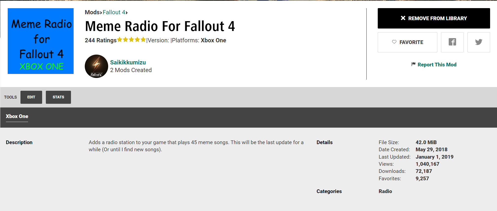
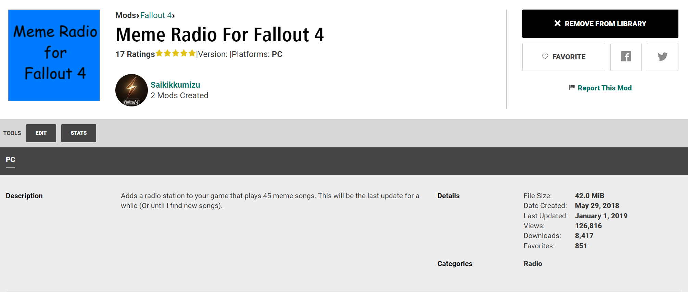

Home
Academic Awards
Resume
Contact Information
Sample Programs
Personal Projects
Personal Projects
Fallout 4 radio mods I made


A playlist of my favorite songs
This is a short compilation video I made in Final Cut Pro
Your browser does not support the video tag.